1先把老師的範本打開
這一課的所有東西都在同一個網址裡。打開瀏覽器，在網址列輸入下面這一行——注意是英文的點，不要打成句號：
網頁最上面寫著「已與你分享 好修,姜老師 建立的範本」，中間是範本的樣子，整個畫面最下面有一顆很大的紫色按鈕。按它：
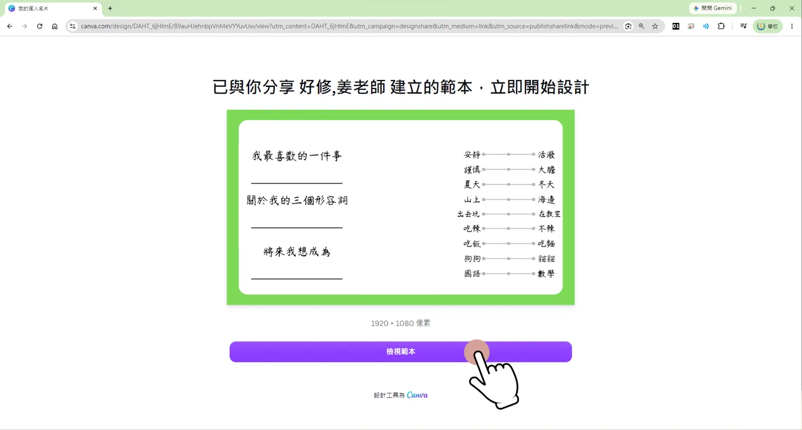
按下去以後，畫面中央會跳出一個白色的小視窗，標題寫著「你的範本已準備就緒！」。視窗左半邊有另一顆紫色按鈕，右半邊是一張示意照片。按左邊那顆：
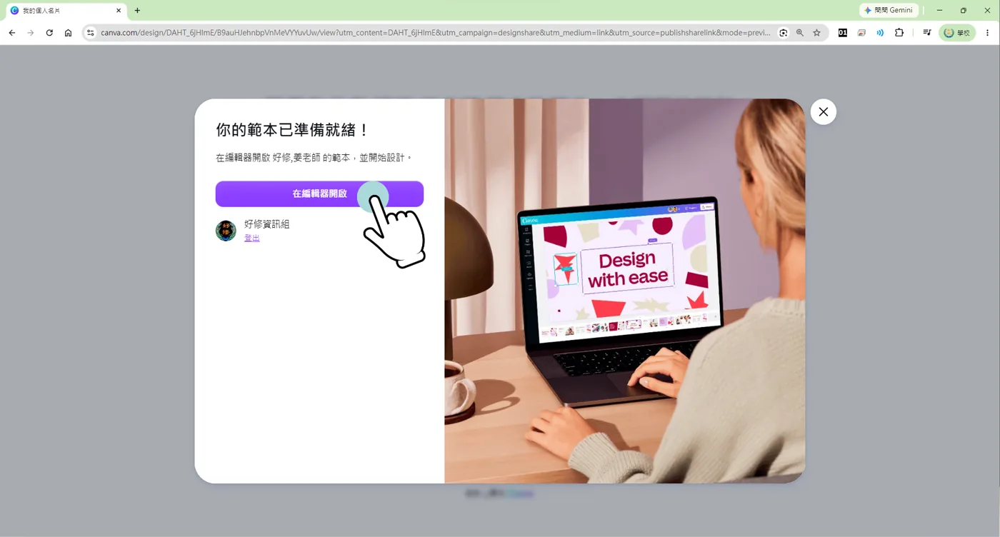
⚠️ 卡在這一步？
- 沒有跳出視窗——代表你還沒登入。畫面右上角會有「登入」，先用學校給的帳號登入，再重新按一次「檢視範本」。
- 按鈕下面顯示的是別人的名字——按那個名字下面的「登出」，換成你自己的帳號登入。不然你等一下做的名片會存到別人的 Canva 裡。
- 不小心把視窗關掉了——不用重打網址，按瀏覽器左上角的上一頁就回得去。
2動手之前，先認識畫面
進到編輯畫面了。第一次看會覺得按鈕好多，其實今天只會用到兩個地方——先把它們的名字記起來，等一下老師講「去功能區」「看編輯區」，你就知道要看哪裡。
第一個是功能區，在畫面最左邊那一直排，由上往下是：範本、元素、文字、品牌、Canva AI、上傳、工具、專案、應用程式。
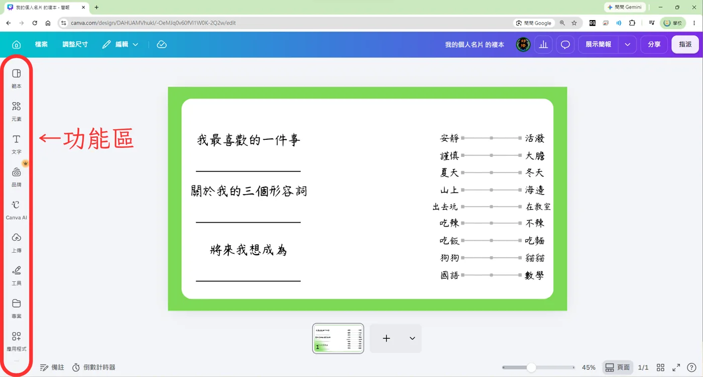
編輯區裡的每一顆按鈕都管一件事。今天只會用到最左邊的三顆——字體、字的大小、字的顏色。其他的先看過就好，以後的課會慢慢用到：
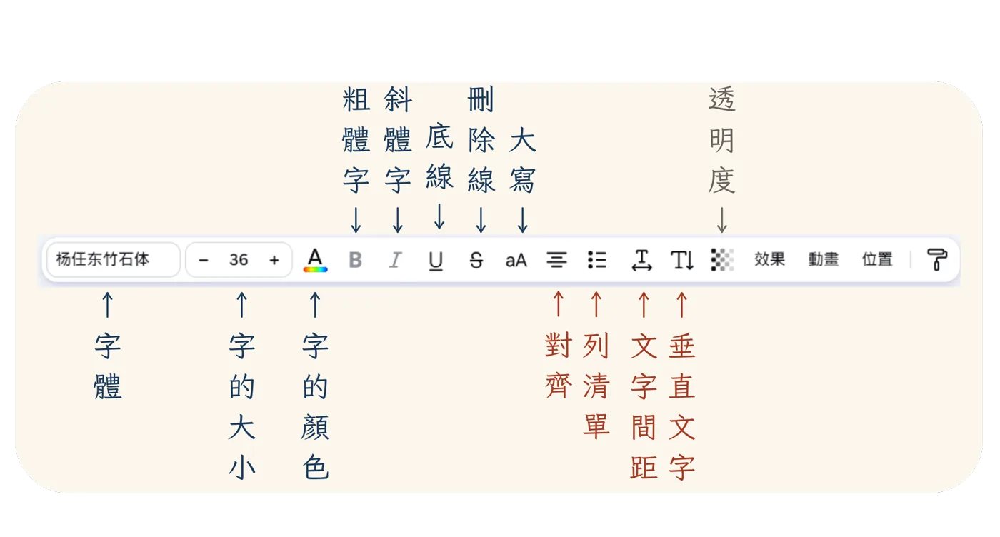
為什麼一開始畫面上沒有看到編輯區？
想想看：編輯區是用來「改某個東西」的，那電腦得先知道你要改哪一個。
3第一件事：寫上你的名字
到功能區點文字——就是那個大寫 T 的圖示，在「元素」的下面一個。點下去，右邊會展開一整片文字面板。
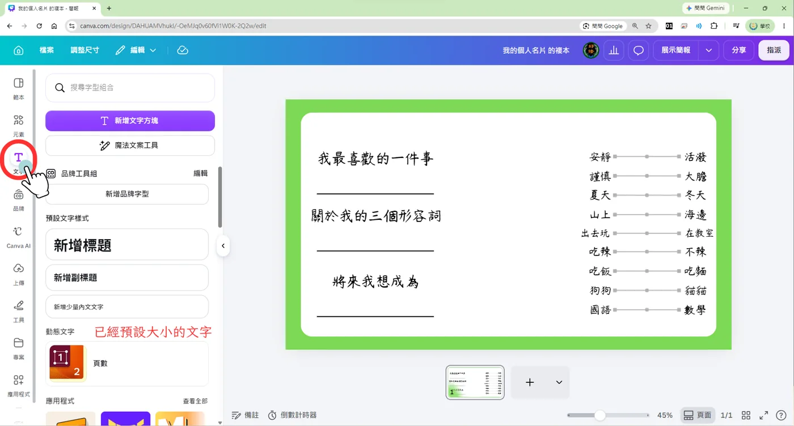
面板最上面那顆紫色的「新增文字方塊」就是我們要的。它下面還有一區叫「預設文字樣式」，裡面的新增標題、新增副標題、新增少量內文文字也可以用——差別是它們已經幫你把字的大小決定好了，名字這種要大大的字，直接點「新增標題」會比較快。
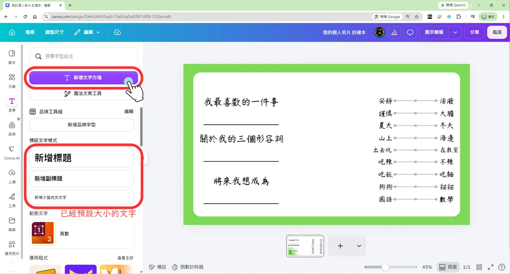
點下去以後，畫面正中央會冒出一個新的文字方塊，裡面的字已經反白（藍色底）了——反白代表「你現在直接打字就會取代它」，不用先按刪除。就在這時候打上你的名字：
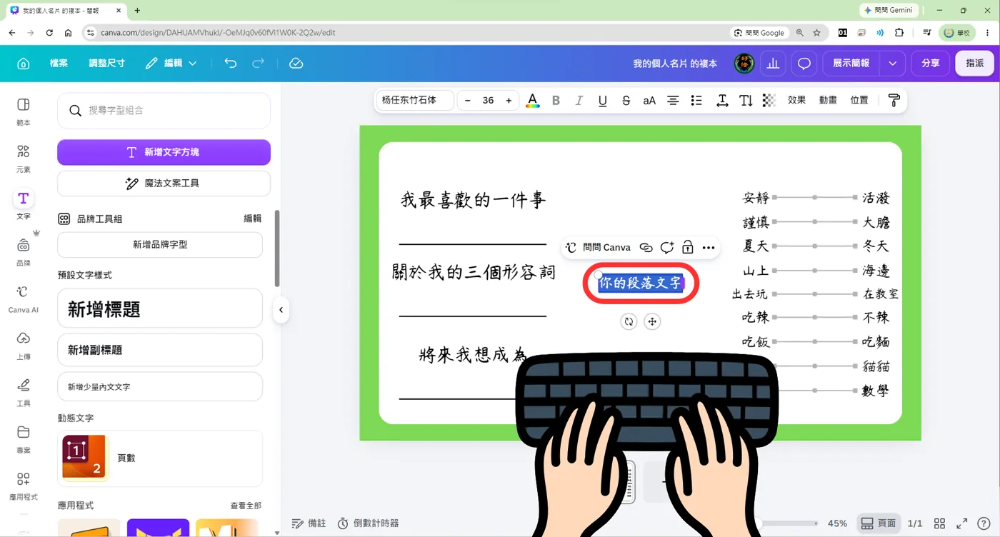
打完按一下 Enter。接下來要調整這幾個字，但在調之前先確認一件事：你的名字有沒有被紫色的框框起來？ 有紫色框，才代表電腦「選到」它了。如果框不見了，用滑鼠在你剛剛打的字上再點一下就會回來。框在了，畫布正上方就會浮出編輯區：
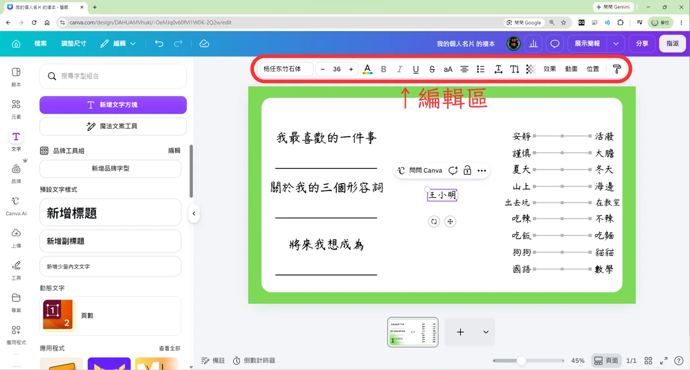
現在就可以動手改了。到編輯區點字體換一個你喜歡的、點 − ＋ 調大小、點彩虹底線的 A 換顏色。改到滿意以後，用滑鼠按住名字往上拖，把它搬到名片的上方：
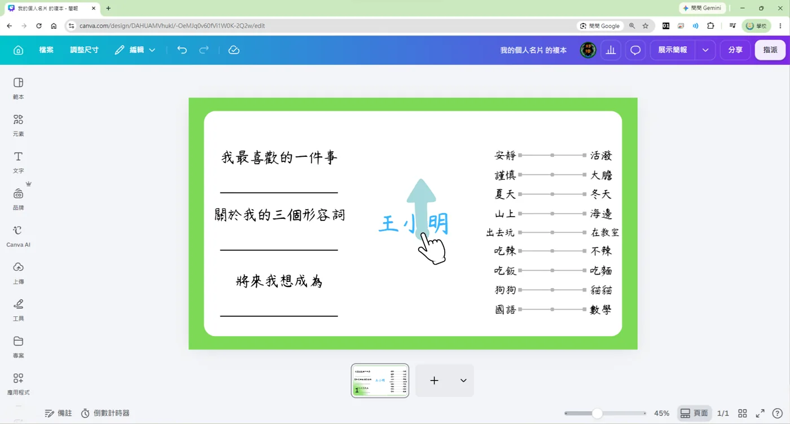
⚠️ 常見狀況
- 字太小看不清楚——不是你眼睛的問題，右下角現在是 45%。把編輯區的字級數字調大（例如 36 改成 72），或拉右下角的縮放桿把畫面放大。
- 改了顏色卻沒反應——多半是紫色框掉了。先在字上點一下，看到框再改。
- 整個文字方塊被拖走變形——你抓到的是角落的圓點（那是縮放用的）。要移動要抓字的中間。
- 做錯想反悔——按畫面最上方那個向左的彎箭頭（復原），或 Ctrl + Z，可以一直退回去。
4回答左邊的三個問題
名片左半邊有三個沒寫完的句子，每一句下面都留了一條橫線：
做法跟剛剛一模一樣：回到功能區點文字 → 點新增文字方塊 → 打字 → 調整樣式 → 拖到那條橫線上面。
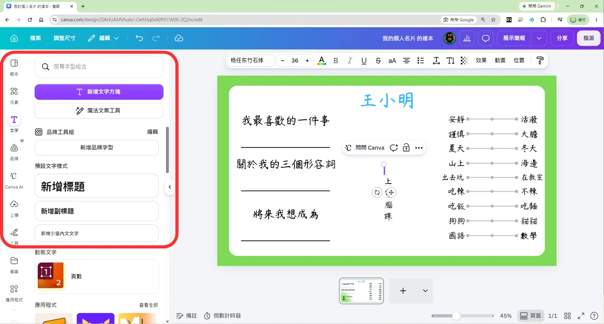
💡 一個省時間的小技巧
三句答案的樣式如果想長得一樣，不必每次都重調一次字體和顏色。在已經調好的那個文字上按右鍵 → 建立複本，複製出來的分身樣式完全相同，你只要點兩下把字改掉就好。這一招等一下第 7 段還會再用一次。
三句都填完，左半邊看起來會像這樣：
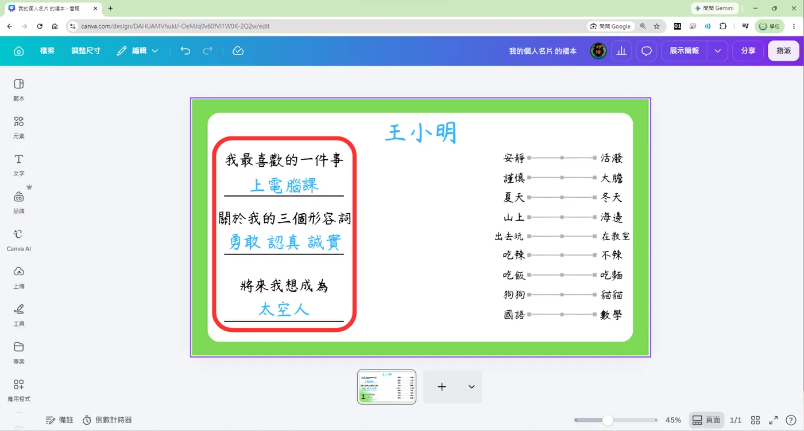
5換一個背景顏色
字都寫好了，但背景還是老師預設的綠色，跟你選的字色不見得搭。在名片外圈那塊綠色的地方點一下（不要點到中間的白色卡片），整片背景就會被紫色外框框起來，代表選到了：
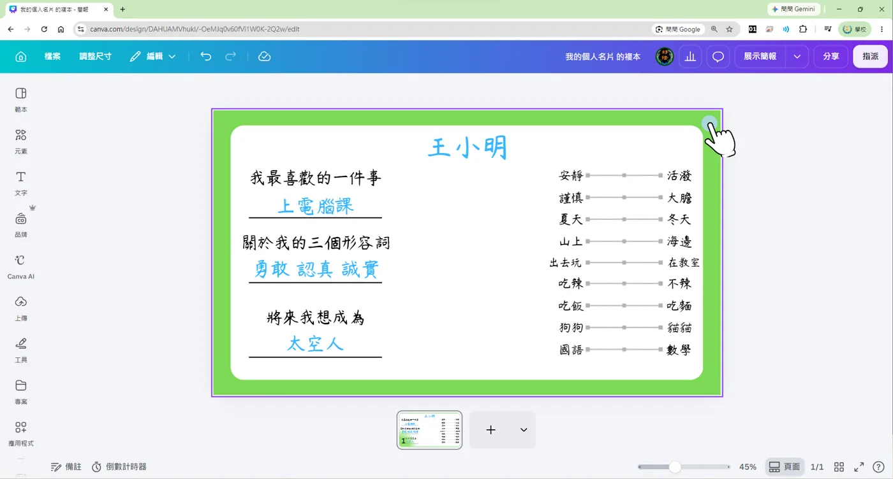
選到以後，畫布正上方會浮出一條工具列。它左邊算過來第三個位置有一個綠色的圓形色塊——那就是現在的背景色。點它：
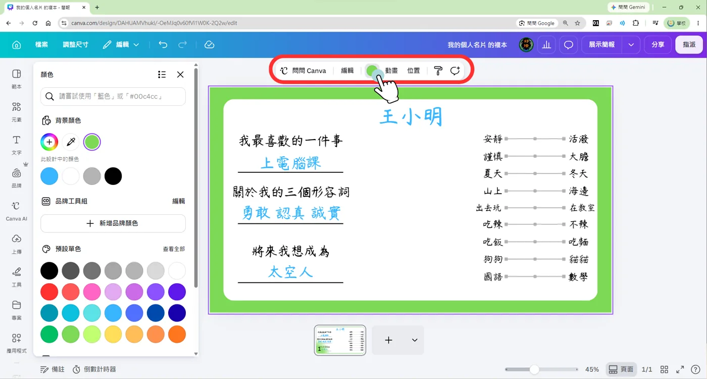
顏色面板的挑法跟改文字顏色完全一樣。上面「背景顏色」那一排最左邊的彩虹圈圈可以自己調任何顏色；往下捲有一大片「預設單色」的色盤，直接點就換：
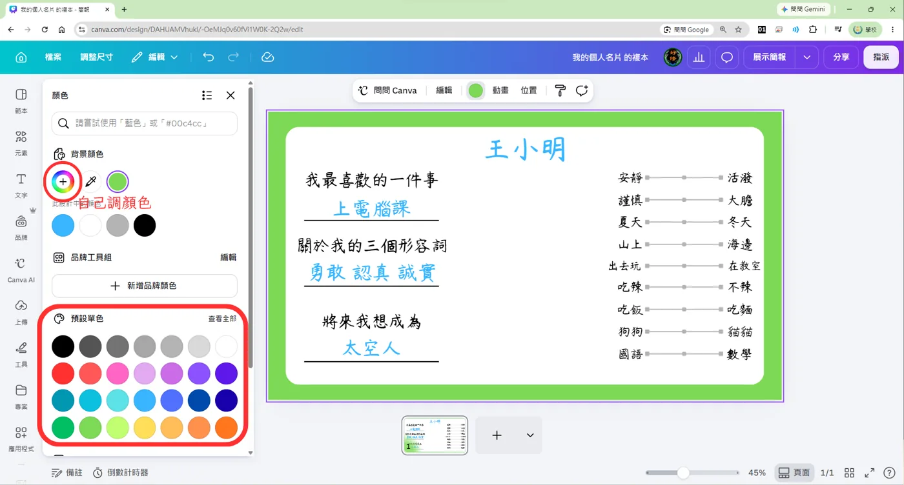
挑顏色不是挑「最漂亮的」，是挑跟你的字最不打架的。深色的字配淺色背景、淺色的字配深色背景，這樣字才看得清楚：
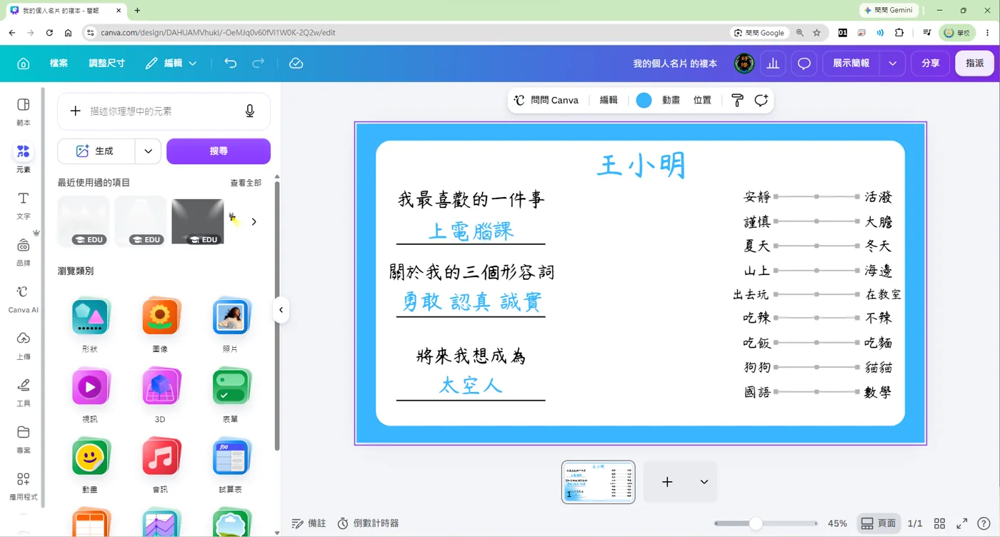
如果你的字是白色的，背景該挑什麼顏色？
想像在紙上寫字：白紙上用白色蠟筆寫，你看得到嗎？
6右邊的光譜，要用圖案來回答
名片右半邊有九條線，每一條的左右各有一個相反的詞：
這九題不是用寫的，是用「放」的——找一個小圖案當作指示物，放在線上愈靠近哪一邊，就代表你愈接近那一邊。放中間就是「兩個都還好」。
先去拿圖案。到功能區點元素——它在「範本」的下面一個，圖示是四個小方塊：
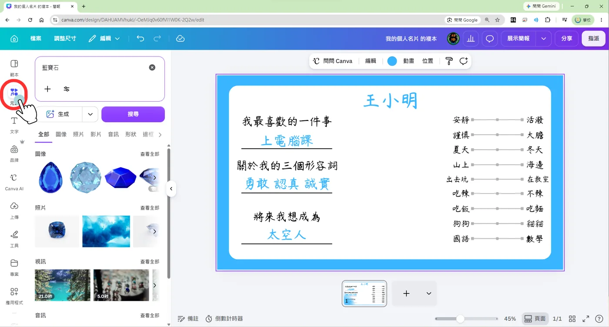
面板最上面是搜尋框。點一下再輸入你想要的東西，然後按右邊紫色的「搜尋」（或直接按 Enter）。
關鍵字怎麼想？兩個原則：顏色要跟你的背景相應，形狀要圓潤——尖尖角角的圖案放在細線上會顯得很吵。範例的背景是藍色，所以搜尋「藍寶石」：
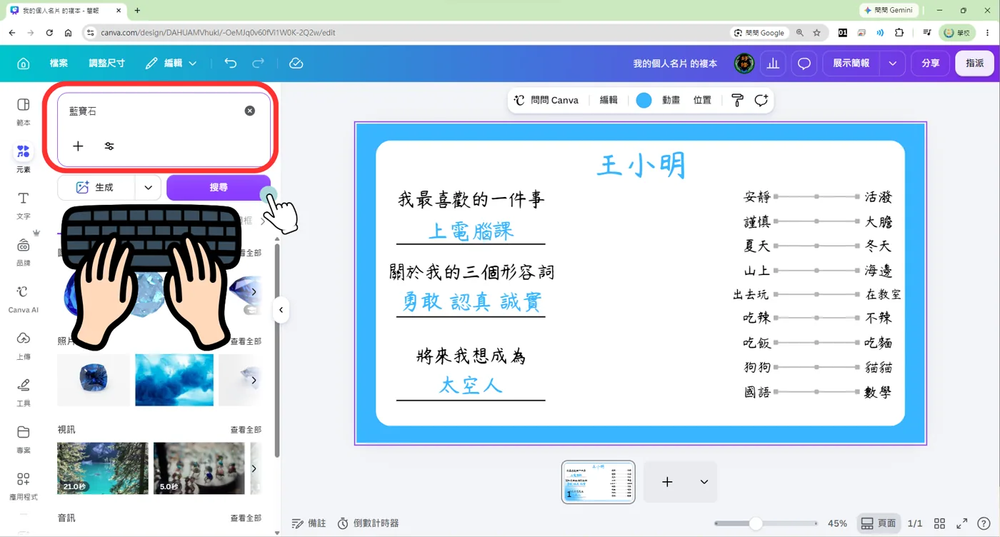
搜尋結果會分成好幾區——圖像、照片、視訊、音訊。我們要的是「圖像」：圖像是畫出來的、背景是透明的，放進作品裡很乾淨；照片是實拍的，會帶一塊方方的背景，蓋住名片上的線。在「圖像」那一列右邊按查看全部，就能看到整區的結果：
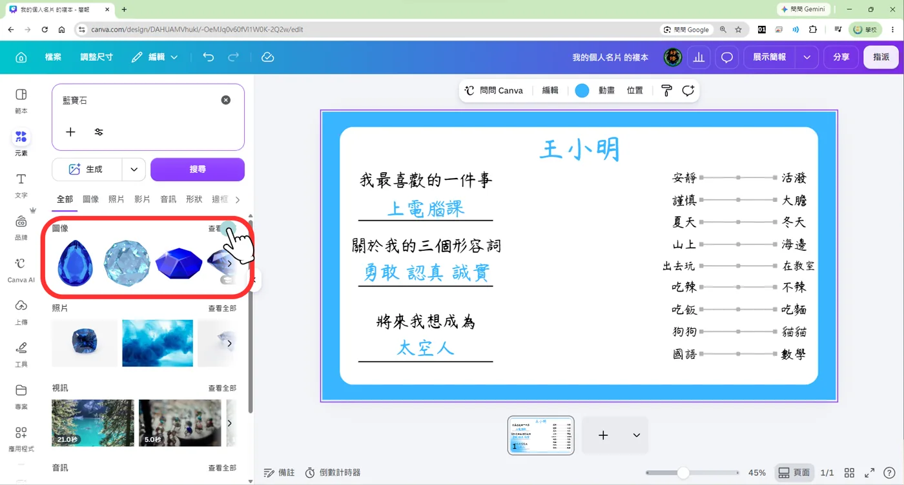
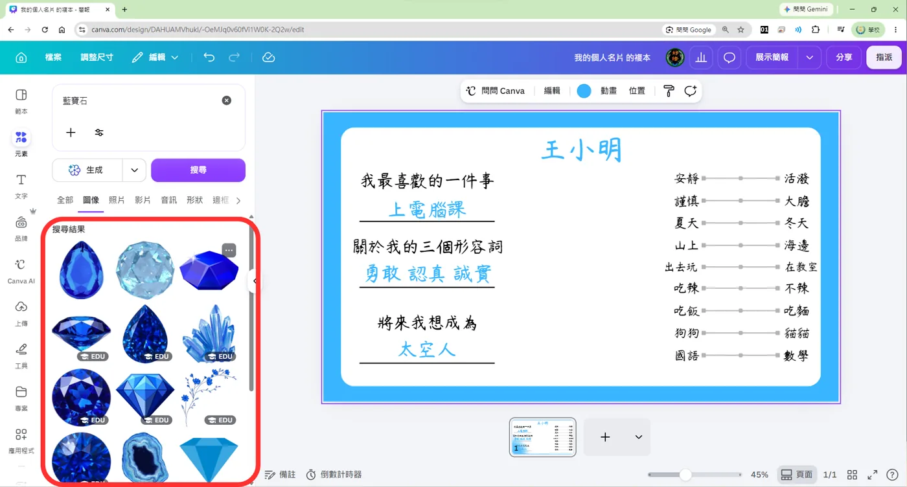
點一下你選的圖像，它會直接出現在畫面正中央，而且已經被紫色框選起來。趁紫色框還在的時候，把滑鼠移到框的角落那個白色圓點上，往內拖就會縮小：
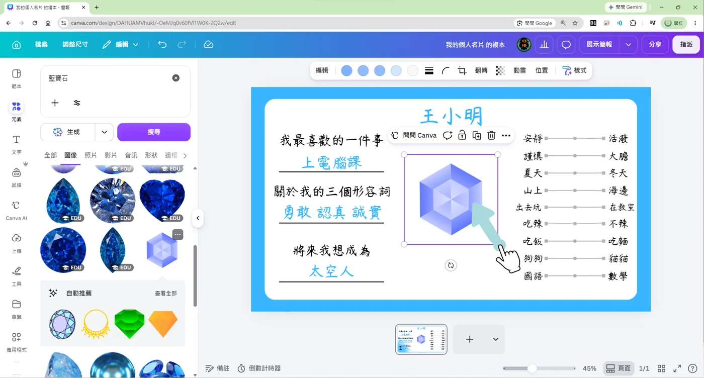
為什麼老師要你挑「圖像」而不是「照片」？
回想一下：照片放進來的時候，圖案周圍會多出什麼？
7一秒生分身：建立複本
把縮小好的指示物拖到第一條線上，位置就是你的答案——愈靠左代表愈接近左邊的詞，愈靠右就愈接近右邊。
擺好以後，先別急著回去搜尋第二個。在你剛擺好的指示物上按滑鼠右鍵：
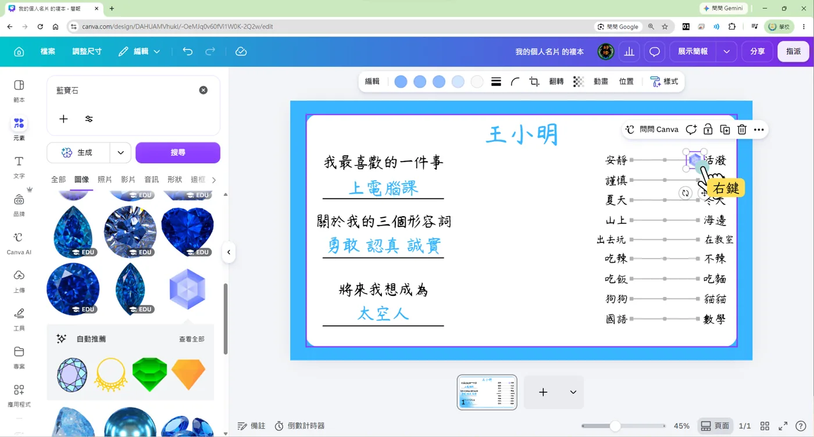
跳出來的選單裡，從上面數下來第四個是「建立複本」，右邊還寫著快捷鍵 Ctrl+D：
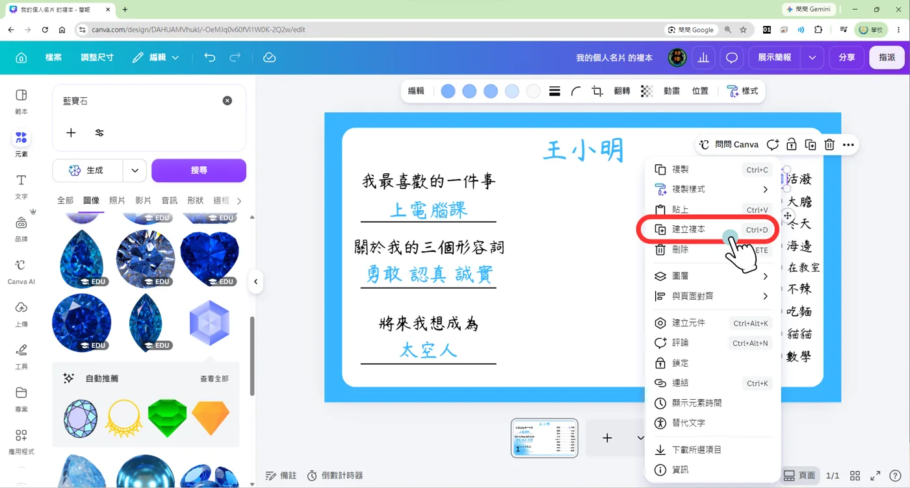
把分身拖到第二條線上回答下一題，然後對著它再按一次右鍵 → 建立複本，就有第三個了。這樣一路做下去：
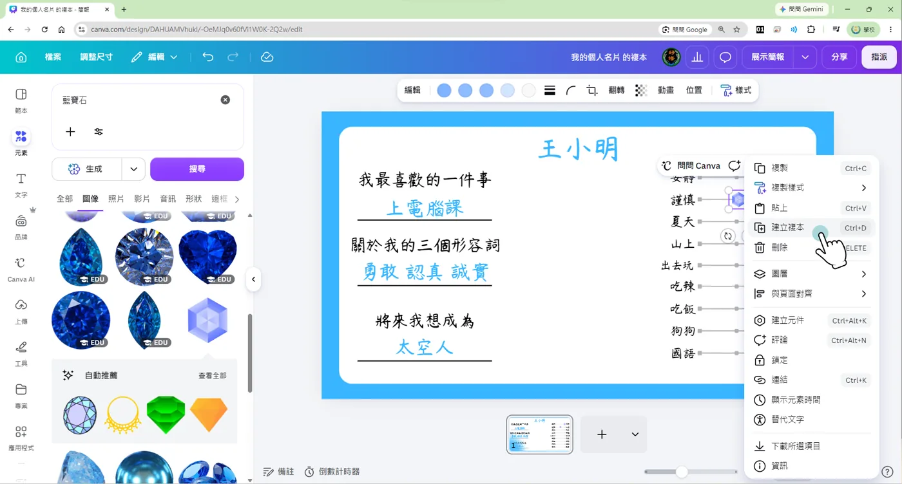
九條線全部放完，右半邊就完成了：
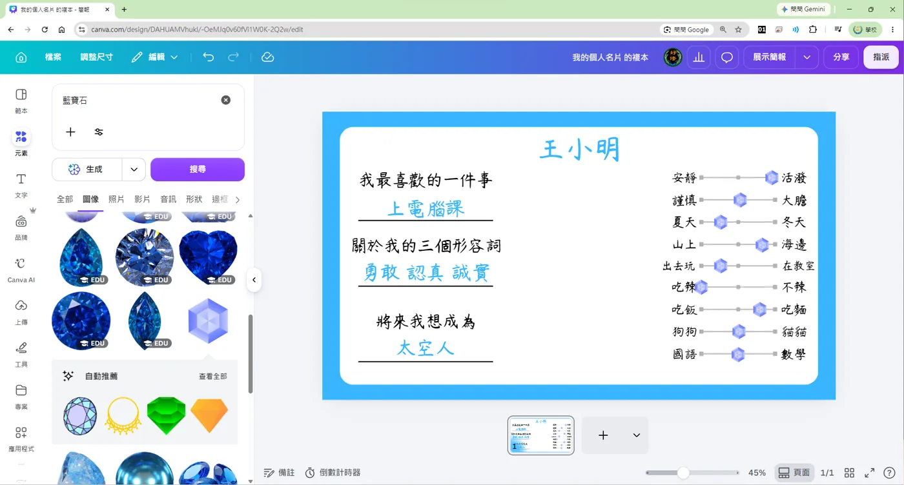
⚠️ 常見狀況
- 按了右鍵卻沒有選單——你按的地方沒有東西。要對著圖案本身按，不是對著空白處。
- 分身找不到——它就疊在原本那個的右下方一點點，被蓋住了。直接拖走就會看到兩個。
- 指示物蓋住字了——把它再縮小一點，或往線的中間挪一點點。
- 不小心複製太多個——點到多出來的那個，按鍵盤 Delete 刪掉。
8最後一步：放上你自己
名片中間還空著一塊，那裡是留給你的。有兩種做法，挑一種：
放進來以後一樣拖角落的圓點縮到合適大小，再搬到中間那塊空白的位置。這樣就完成了：
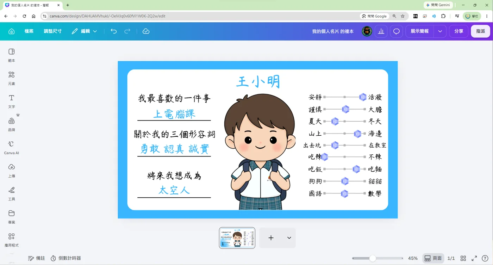
💡 不用存檔
Canva 會自動幫你存。畫面最上面那個打勾的雲朵圖示就是在告訴你「已經存好了」。所以不用找存檔按鈕，但也不要在還在轉圈圈的時候關掉分頁，等它變成打勾再關。
9換你完成自己的名片
照著下面的順序做一遍。做完一步就點一下打勾，才不會漏掉。
- 打開範本網址，按 檢視範本 → 在編輯器開啟，確認登入的是你自己的帳號
- 用 文字 → 新增文字方塊 打上你的名字，調字體、大小、顏色，拖到名片上方
- 用同樣的方法回答左邊的三個問題（想省時間就用右鍵 → 建立複本）
- 點綠色背景 → 上方的圓形色塊 → 換一個讓字看得清楚的顏色
- 用 元素 搜尋一個顏色相應、形狀圓潤的圖像，按查看全部後挑一個
- 拖角落的圓點把它縮小，擺到第一條光譜線上
- 右鍵 → 建立複本，重複到九條線都放好指示物
- 在中間放上你自己（元素裡的人物，或上傳照片），調好大小
⚠️ 交作品之前，自己先檢查三件事
- 字都看得清楚嗎？把畫面縮到 45%，站遠一點看——如果要瞇眼才看得到，就是字太小或顏色太接近背景。
- 有沒有東西壓到別的東西？指示物蓋住線上的字、文字方塊疊在一起，都要挪開。
- 九個指示物的位置都不一樣嗎？如果全部擠在正中間，代表你其實還沒回答那九題。
🎁 做完了還有時間？
- 試試編輯區的 效果——可以幫文字加陰影、外框，名字會更醒目。
- 把名片給旁邊的同學看，請他只看光譜猜猜看你是什麼樣的人，看猜不猜得中。
- 回頭看你選的背景色和圖案顏色，想想看換成完全相反的顏色會變怎樣——再做一張比較看看。